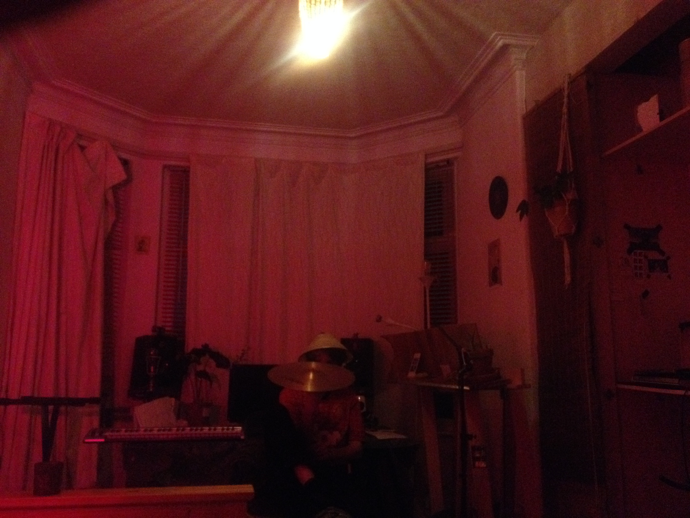

Inspired by mr Lomax' digital archive"; I have been wanting to start sharing some of my field recordings.
So far all the uploaded audio files have been recorded on an Iphone. The name of the audio files should store the information of certain keywords in what is audible, the place it's recorded, date and recording devices e.g.: Iphone or Zoom.
I hope this will be of any use to you as a tool to create music or in any creative way. If you decide to use this for commercial use please contact me.
This website is created to share audio samples with fellow musicians / sound engineers, anyone interested in field recordings and is not meant for commercial use. If anyone wants to use any of this content they can contact me for further information. All rights reserved to the artists who have given their permission to share the content on this website.
